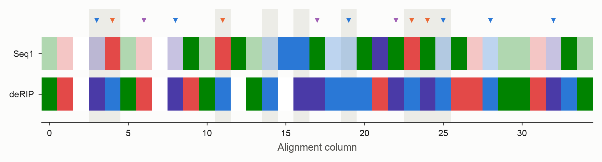
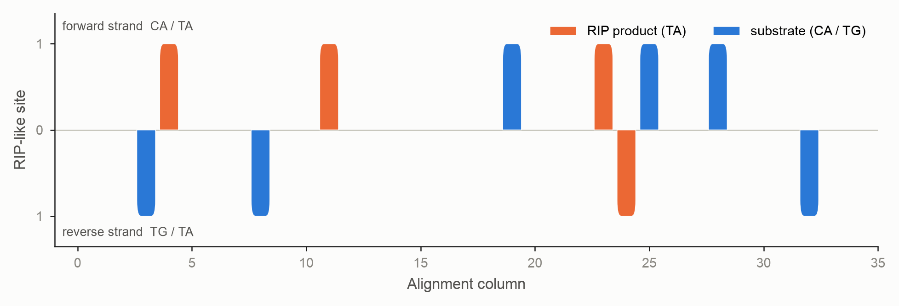
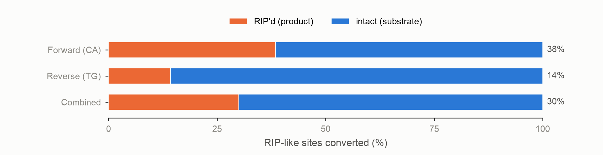
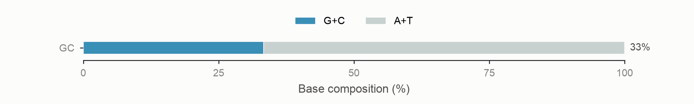
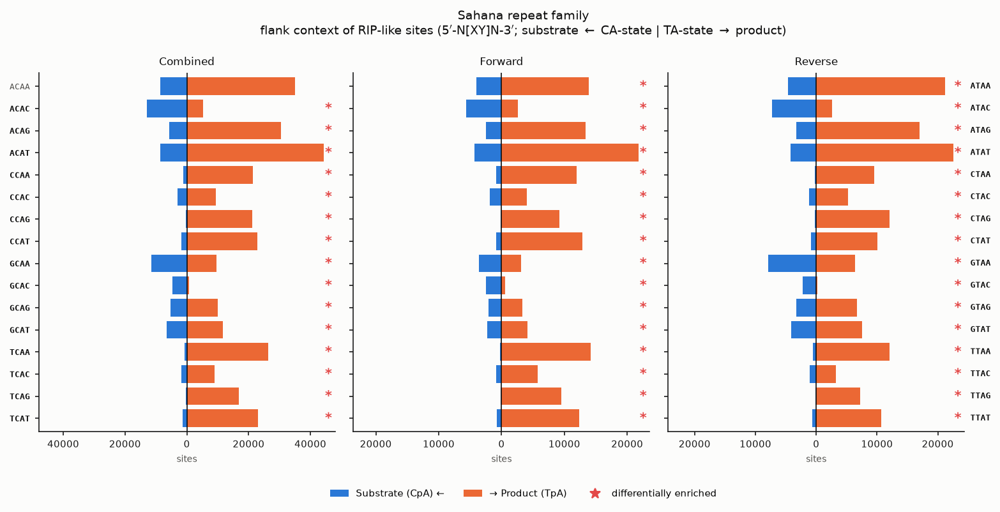
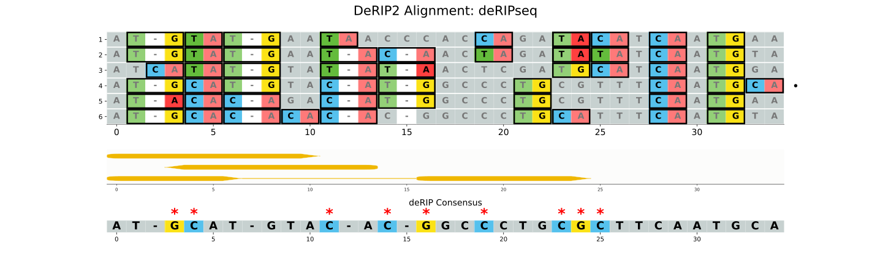

Per-sequence HTML reporting
deRIP2's other outputs summarise a repeat family as a whole — the deRIP'd consensus, the alignment-wide strand-bias figure, the pooled mutation spectrum. This page covers the complementary view: an interactive, per-sequence report that lets you inspect what RIP did to one family member at a time, and — when you supply a gene model — what those mutations do to the encoded protein.
The per-sequence report
This writes a single self-contained results/deRIPseq_per_sequence.html. Open
it in any browser and step through the sequences with the left/right arrow
keys (or the Prev/Next buttons). The header bar — sequence number, name and
ungapped length — stays pinned to the top as you scroll, and your scroll
position (both axes) is preserved between sequences so the same region stays in
view when you flip pages. Every figure is embedded as inline SVG, so the file
has no external assets — it can be emailed or archived as one file, and the
figures stay vector.
Each sequence gets a panel with several sections.
Alignment row
The subject sequence (top) and the reconstructed deRIP'd reference (below), each drawn base-by-base and coloured by nucleotide identity (A green, C blue, G violet, T red; gaps white), separated by a narrow gap. Triangle markers above the subject flag its role at each RIP-informative column — orange for the RIP product, blue for the surviving substrate, violet for non-RIP deamination. Columns the whole-alignment strand-bias analysis marks as RIP-like are shaded grey, exactly as in the alignment-wide plot. A colour key sits above the figure.

Long alignments scroll horizontally; the −/+ zoom control in the toolbar
scales the alignment row and the strand-bias strip together, so they stay
aligned column-for-column as you zoom in to read individual bases.
Per-sequence strand bias
A fixed-height binary strip: one bar per RIP-like column this sequence takes
part in. Forward-strand events sit above the axis, reverse-strand events
below, and each bar is coloured by whether the sequence's base is the RIP
product (orange, TA) or the surviving substrate (blue, CA on the
forward strand, TG on the reverse). Because a base is either product or
substrate, each column shows at most one bar — so the strip reads as a clean
yes/no map of where RIP struck this copy.

This is the single-sequence companion to the alignment-wide strand-bias figure, which pools every sequence into scaled bars.
RIP completion and GC content
Two horizontal stacked bars summarise how far RIP has gone. RIP completion shows the fraction of the available RIP-like sites (surviving substrate plus product) that have been converted to product, per strand and combined:

GC content shows the sequence's base composition; RIP lowers GC by converting C to T, so a low bar is consistent with heavy RIP:

Mutation spectra
The sequence's SBS-96 trinucleotide mutation spectrum measured against the
reconstructed ancestor, and a second downstream-context spectrum that
classifies each substitution by the mutated base plus its two downstream bases
(resolving the CHG-methylation C>T signal). These are the
mutation-spectrum analyses restricted to one row
(calculate_spectra(partition_by='row')), so RIP's C>T signature in CpA
context shows up per sequence. Each spectrum scrolls horizontally on its own so
the 96 channels never overlap.
Flanking-context spectra of RIP-like sites
Not every substrate motif is converted to product in a RIP-affected sequence.
To ask whether a local sequence context protects a substrate from RIP, this
section classifies every RIP-like dinucleotide by the single base 1 bp
upstream and 1 bp downstream — a 4 bp motif [up][centre][down] with the two
centre bases fixed and the flanks varying, giving 16 channels. Two site
states are counted:
- Substrate — surviving
CpA(forward strand) andTpG(reverse strand), counted anywhere in the sequence (not only in RIP-informative columns). - Product — realised
TpAsitting in a RIP-informative column.
Reverse-strand motifs are reverse-complemented onto the CpA/TpA strand, and
each strand view — combined, forward, reverse — is drawn as a bihistogram:
substrate counts (blue) extend left and product counts (orange) extend right of a
shared centre line. Each row is named on both sides — the CA-state (substrate)
motif on the left y-axis and the equivalent TA-state (product) motif on the
right (GCAG on the left ≡ GTAG on the right).
A motif is marked with a red * when its enrichment differs significantly between
the two states. For each of the 16 flank contexts the substrate and product counts
form one row of a 16×2 table, and that cell's adjusted standardised (Haberman)
residual is compared to the standard normal: the motif is flagged when
|z| ≥ 1.96 (two-sided p < 0.05), provided both states have ≥ 20 sites, with no
multiple-testing correction. (On the pooled overview the counts are large enough
that almost every context clears this bar, so lean on the effect sizes there.)

Beneath the bihistograms, a sortable per-motif table lists each CA-state motif
with its combined substrate count, product count, total, and % RIP (the
product share of the total — how much of that context was converted). The final
Conversion column draws that percentage as a stacked bar (orange = product,
blue = surviving substrate), so a fully-converted context reads all-orange at a
glance. Sort the motif column by its 5′ or 3′ flanking base, or any numeric column
by value, to find the most- and least-converted contexts. A second table reports the five
comparisons that test the protection hypothesis: substrate-vs-product flank
distribution (combined / forward / reverse) and forward-vs-reverse (substrate /
product). It leads with the scale-free cosine similarity (1 = identical flank
preference) and Cramér's V; the χ² p-value is shown only where both spectra
have enough sites (≥ 20 by default), and * marks p < 0.05.
The overview page carries the same tables pooled across all sequences, with the bihistogram reduced to just the combined-strand panel (the per-sequence pages keep the forward and reverse panels). With very large pooled counts almost every context is flagged, so read the effect sizes rather than the marks.
To drive this analysis from Python — extracting the spectra, ranking motifs by conversion, and comparing two spectra sets — see the Flank-context Spectra (API) tutorial.
Two companion tables are written alongside the report whenever
--per-seq-report is set:
prefix_rip_context_spectra.tsv— tidy counts, one row persample × state × strand × channel(thecombinedstrand is the sum offorwardandreverse).prefix_rip_context_comparisons.tsv— one row persample × comparisoncarrying the cosine, Cramér's V, χ², p-value, site totals, reliability flag and most-differentiating channels.
Summary statistics
That sequence's statistics, split into described cards — RIP events (including a
total), the strand-bias/RSI components, the composite RIP index (CRI), and
composition. A CRI above 1 is highlighted green, and a strand-asymmetry
p-value below 0.05 is shown in bold. These are the same values written by
--stats-out.
Large alignments
Rendering hundreds of sequences produces hundreds of inline figures and a large
file. For big families, cap the report with --max-report-seqs:
The report then keeps the N sequences with the strongest strand bias (largest
|RSI|) and notes that it was truncated.
Gene annotation and RIP effect reporting
If you have a gene model for one or more of the aligned sequences, supply it as
GFF3 with --gff. The sequence ids in the GFF must match the alignment record
ids, and coordinates are given in each sequence's own ungapped frame (1-based
inclusive); deRIP2 adjusts them for the gaps in the alignment automatically.
derip2 -i tests/data/mintest.fa \
--gff tests/data/mintest.gff3 \
--per-seq-report \
--plot \
-d results
Providing --gff turns on three things.
An annotation track on the alignment figure
--plot gains a gene-annotation sub-plot between the alignment and the deRIP
consensus. Each gene occupies its own row, drawn as rounded CDS exon segments
joined across introns by a midline of the gene colour, with an arrowhead giving
the strand; a bold red * marks each stop codon in the deRIP'd consensus's
projected reading frame. Gaps in a sequence are accounted for so the track lines
up with the columns.

Override the default per-type colours with a two-column type<TAB>hex file via
--annotation-colors.
CDS SNP-effect panels in the per-sequence report
Each annotated sequence's panel gains a CDS SNP effects table. deRIP2 assembles the sequence's CDS in transcription order (reverse-complementing minus-strand genes and joining exons), translates it against the reconstructed ancestor, and reports:
- premature stops — a codon that became a stop,
- missense — a non-synonymous amino-acid change,
- frameshifts — an indel that shifts the reading frame,
- splice sites — a broken canonical
GT…AGintron boundary.
The panel also shows the deRIP-restored protein: the amino-acid sequence the
un-RIP'd (ancestral) CDS encodes, with * for any stop codon.
By default the standard NCBI genetic code (table 1) is used; select another with
--genetic-code (for example, 4 for some fungal mitochondrial genes).
A SNP-effect summary file
--gff always writes prefix_snp_effects.txt, a tab-separated summary of every
effect per sequence, followed by the restored CDS translation for each gene:
seq_id gene_id kind aa_pos ref_aa alt_aa gapped_col nt_change
Seq1 mRNA1 missense 2 H Y 5
Seq1 mRNA1 missense 3 V E 9
# deRIP-restored CDS translations
# gene_id protein
# mRNA1 MHV
Python API
The same outputs are available on the DeRIP object:
from derip2.derip import DeRIP
derip = DeRIP("tests/data/mintest.fa")
derip.calculate_rip()
# Per-sequence report (optionally with a gene model)
derip.write_per_sequence_report(
"per_sequence.html",
gff="tests/data/mintest.gff3",
genetic_code=1,
max_seqs=None,
)
Lower-level building blocks live in derip2.annotation (parse_gff3,
predict_gene_effects, translate_cds, compute_effects_for_alignment,
write_snp_effects) and derip2.plotting.persequence
(per_sequence_strand_bias, sequence_row_strip, rip_completion_bar,
gc_content_bar). The single-sample spectra are drawn by
derip2.plotting.spectra.plot_sbs96/plot_downstream with the sample=
argument.